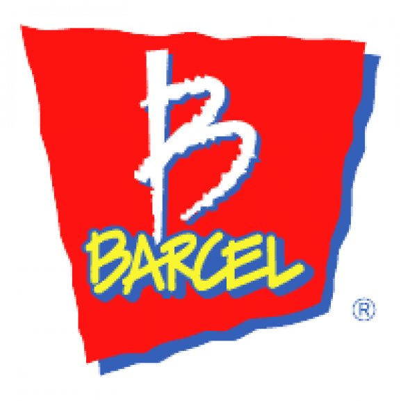
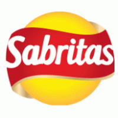

A partir del próximo 01 de Octubre, además de abarrotes, contaremos con los siguientes productos:
Verduras:
| Tomate rojo |
| Tomate verde |
| Cebolla blanca |
| Cebolla morada |
| Papas |
| Zanahoria |
| Lechuga |
Chiles:
| Chile 1 |
| Chile 2 |
| Chile 3 |
Recuerde que contamos con recargas de todas las compañías celulares, y no cobramos comisión por recargas.
Estas son algunas de nuestras marcas:
|  |  |

|
Tenemos nuevo horario: 7 am a 9:30 pm de Lunes a Sábado, 8 am a 8pm los Domingos.
Recuerde que atendemos pedidos de tortilla por correo electrónico:
© Copyright by Carlos